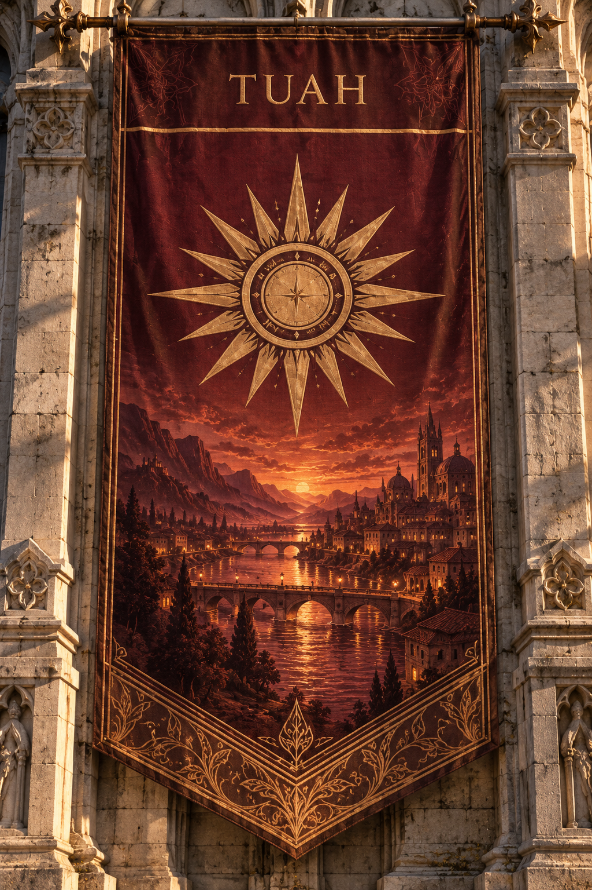
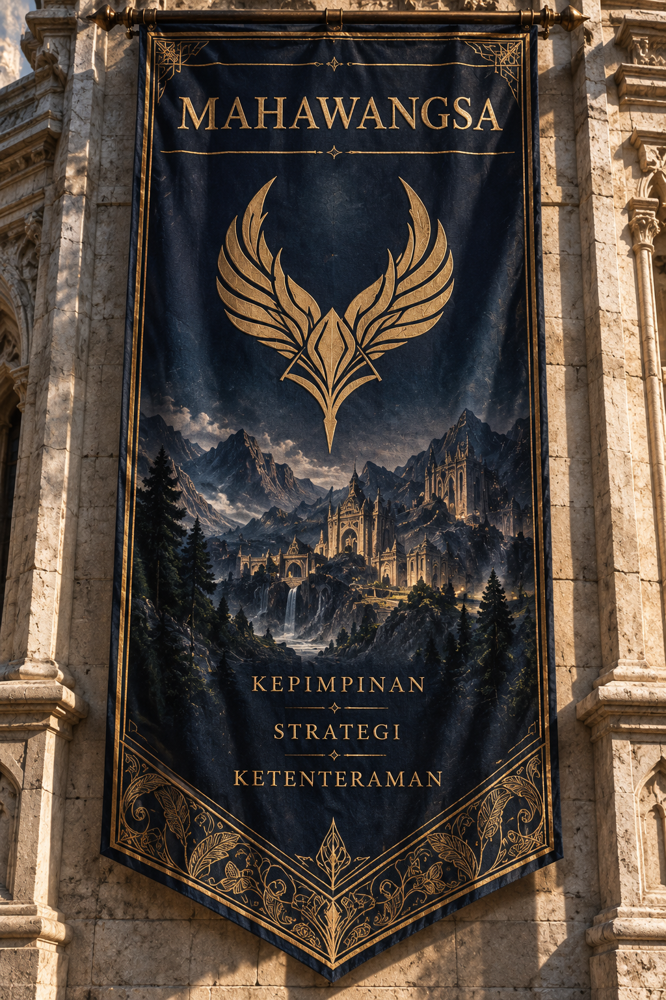
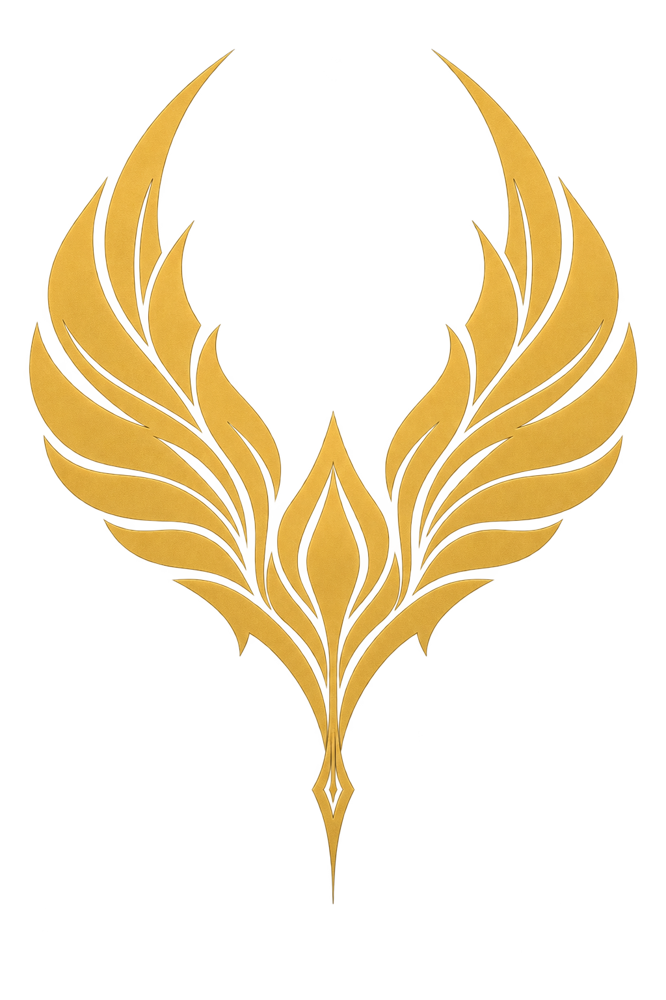
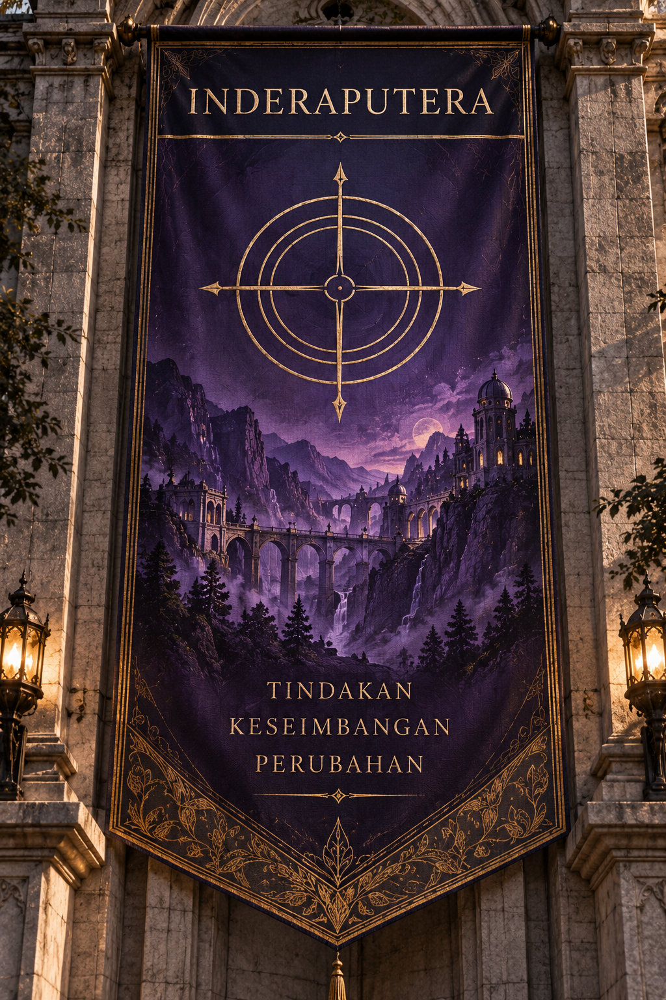
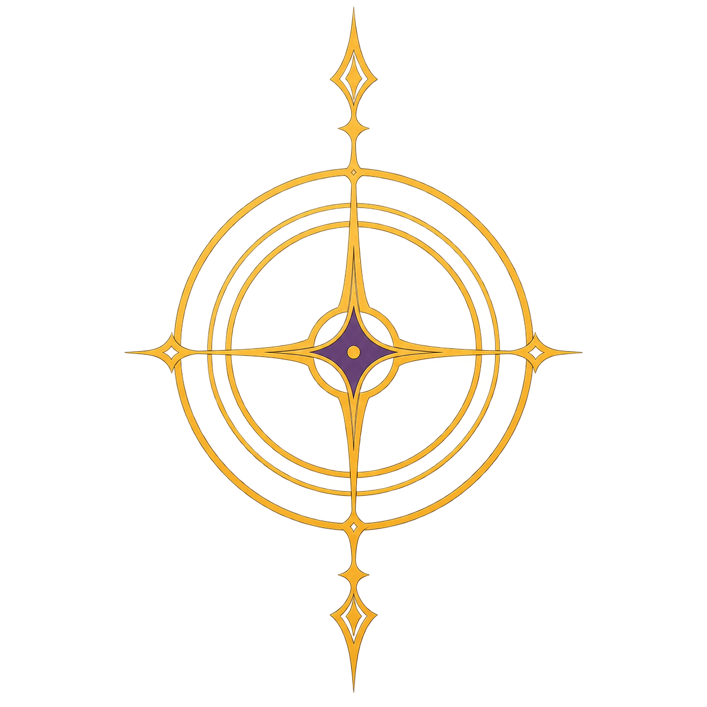
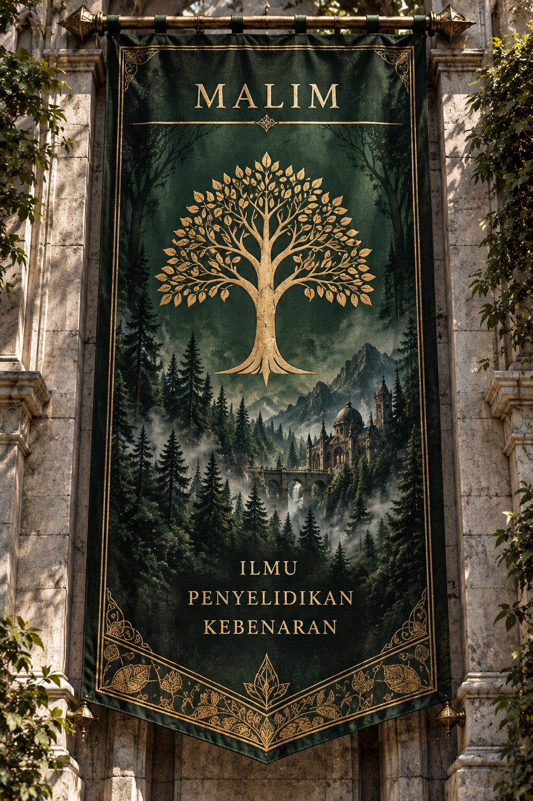
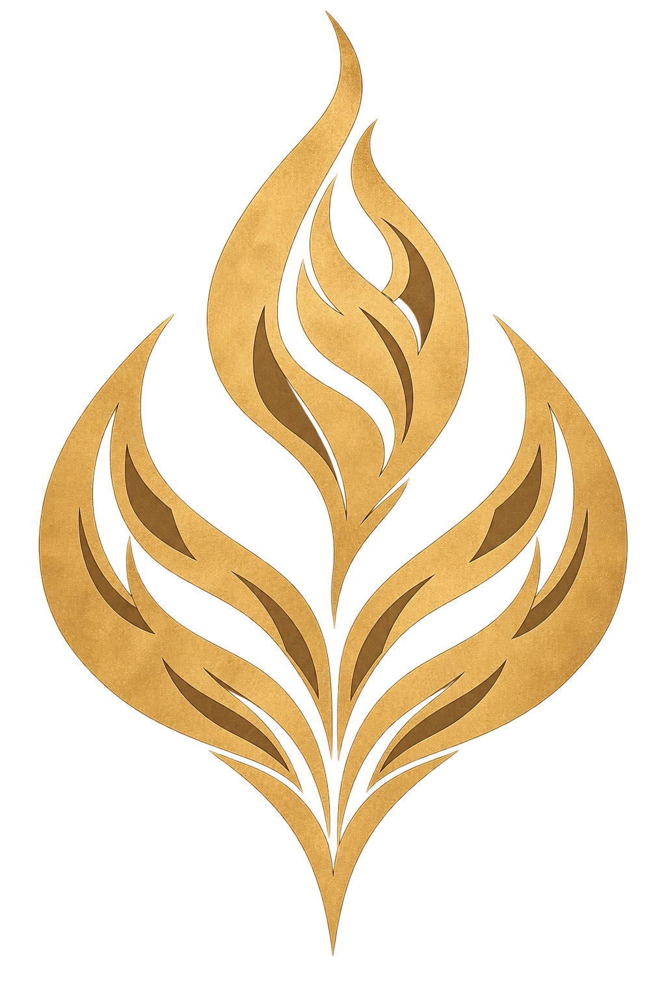
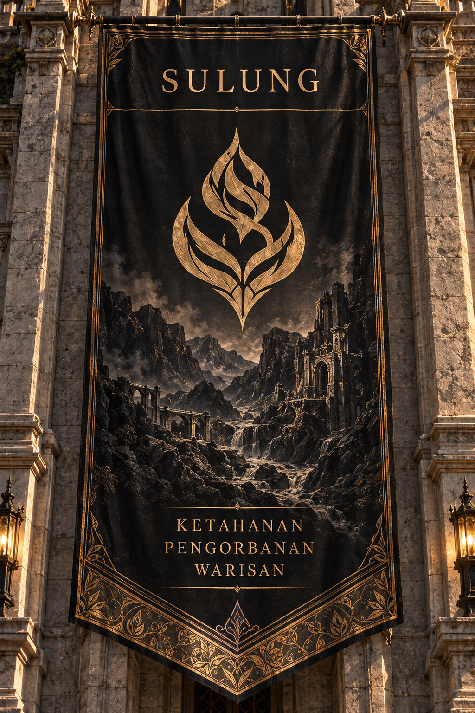
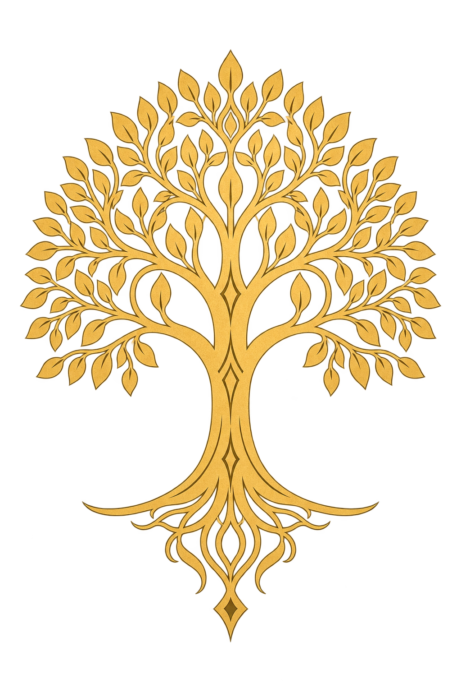

01
TUAH
Kedudukan semasa tertinggi dalam sistem Mata Niskala.
Sebuah institusi pendidikan yang tidak sekadar menilai apa yang diketahui oleh seseorang, tetapi bagaimana mereka melihat sesuatu yang tidak dilihat oleh orang lain.
Niskala tidak bermula sebagai sebuah kolej elit. Ia bermula daripada sebuah lembah dan satu kepercayaan bahawa ilmu tidak sepatutnya dimiliki seorang diri.
Ratusan tahun dahulu, kawasan Niskala hanyalah sebuah lembah yang didiami petani, pedagang, tukang dan masyarakat kampung.
Mereka mempunyai satu budaya yang luar biasa. Sesiapa yang keluar merantau mempunyai tanggungjawab untuk membawa pulang sesuatu yang telah dipelajari.
Pengetahuan perdagangan, pembinaan, strategi, bahasa, pembacaan dan pengalaman luar dikongsi kepada masyarakat.
Sebuah komuniti kecil membentuk budaya perkongsian ilmu antara generasi.
Lembah kecil itu mula menghasilkan pendidik, pencipta, pentadbir dan pemikir.
Lima tokoh dari lembah kembali dan membina sebuah institusi pendidikan.
Institusi tersebut berkembang menjadi lima kampus dengan ribuan pelajar.
Setiap kampus mempunyai sejarah, tradisi, komuniti dan persaingan tersendiri. Tiada kampus dikhaskan untuk satu jenis kebolehan.

Kedudukan semasa tertinggi dalam sistem Mata Niskala.


Kampus Faiz, Harith dan Danish. Bilik 217 berada di sini.


Salah satu daripada lima komuniti utama Niskala.


Kemudahan mula menunjukkan kesan kedudukan rendah dalam sistem mata.


Kampus dengan peruntukan paling terhad pada kedudukan semasa.
Setiap mahasiswa mempunyai Mata Individu. Prestasi tertentu juga boleh menyumbang kepada Mata Kampus.
Akademik, projek, pertandingan, aktiviti, pencapaian dan tugasan tertentu boleh memberikan mata.
Pilih mana-mana watak untuk membuka rekod mereka.
Mereka baru mengenali satu sama lain ketika ditempatkan di bilik yang sama. Pada pandangan pertama, tiada seorang pun kelihatan seperti genius luar biasa yang sering dikaitkan dengan Niskala.
Tetapi sedikit demi sedikit, perkara kecil mula menunjukkan bahawa setiap seorang mempunyai sesuatu yang tidak biasa.
Lima orang awam terperangkap. Kebanyakan pelajar cuba mencari jalan turun. Kumpulan Faiz memilih arah bertentangan.
Pejabat • Bilik mesyuarat • Bilik fail
Butik • Kiosk • Ruang legar
Kawasan kebakaran
Lima orang bergerak dari Tingkat 2 menuju tangga utama.
Mereka menggunakan tangga untuk naik ke Tingkat 3.
Tangga kecil di kawasan pentadbiran membawa mereka ke bahagian bumbung.
Maklumat visual yang diingati Harith menunjukkan sambungan ke bangunan bersebelahan.
Kelima-lima orang meninggalkan Bangunan Metropoli tanpa turun melalui tangga.
Kehidupan biasa Faiz berubah apabila satu ujian mengejut membawa Dr. Zafran kepada nama yang sudah lama berada dalam pemerhatian Niskala.
Faiz menaiki bas tanpa mengetahui lokasi sebenar Niskala sebelum ditempatkan di Mahawangsa dan bertemu Harith serta Danish.
Simulasi Metropoli mula menunjukkan cara Faiz melihat masalah, sementara sistem Mata Niskala memperlihatkan kesannya terhadap lima kampus.
Mengapa Faiz sudah berada dalam pemerhatian sebelum Dr. Zafran mencalonkannya? Bagaimana Niskala memilih pelajarnya? Dan apakah tujuan sebenar sistem yang mengawal kehidupan lima kampus?
Kembali ke Atas